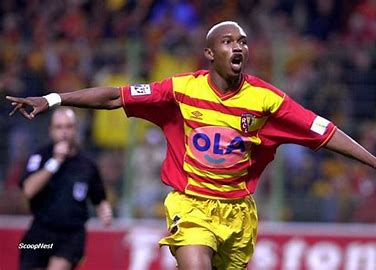
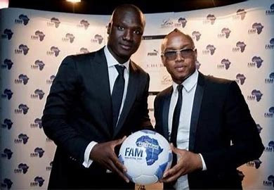
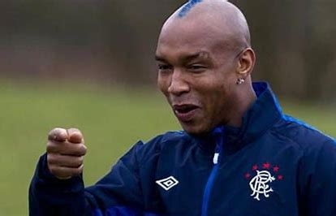

En clubVainqueur de la League Cup en 2003 avec LiverpoolVice-champion de France de Ligue 1 en 2002 avec Lens Finaliste de la Coupe Intertoto en 1999 avec le Stade Rennais Vainqueur de la Coupe de la Ligue écossaise en 2011 avec les Rangers FC Vainqueur du Championnat d'Écosse en 2011 avec les Rangers FC  |
En sélection nationaleQuart de finaliste de la Coupe du monde 2002 (match perdu 1-0 en prolongation contre la Turquie)Finaliste de la CAN en 2002 (finale perdue aux tirs au but contre le Cameroun) Quart de finaliste de la CAN en 2004 (match perdu 1-0 contre la Tunisie) Demi-finaliste de la CAN en 2006 (Les Lions terminent 4e  |
Distinctions personnellesBallon d'or africain en 2001 et 2002 (sacré deux fois d'affilée) Footballeur africain de l'année en 2002Meilleur joueur de la Coupe d'Afrique des nations en 2002 Nommé dans l'équipe type de la Coupe d'Afrique des nations en 2002 Nommé dans l'équipe type de la Coupe du monde en 2002 Nommé au FIFA 100 en 2004 Élu meilleur footballeur sénégalais des 50 dernières années en 20078  |